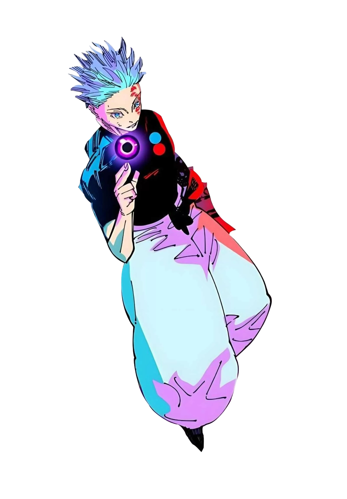

Full description of Gojo Satoru
Six Eyes: A rare ocular jujutsu that allows Gojo to perceive cursed energy at an atomic level, granting him near-omniscient awareness of his surroundings and the ability to use his techniques with extreme precision and minimal energy expenditure.
Limitless: Gojo's innate technique that manipulates space itself. It consists of three main applications: Cursed Technique Lapse: Blue (attraction), Cursed Technique Reversal: Red (repulsion), and Hollow Technique: Purple (imaginary mass that erases matter).
Hollow Technique: Purple: Created by merging Blue and Red, this imaginary mass erases matter and cursed energy from existence upon contact, leaving nothing but vacuum in its path.
Infinity: The neutral form of Limitless that automatically filters anything approaching Gojo based on speed, mass, and danger level. This creates an infinite space between him and threats, making him virtually untouchable.
Personality
Gojo Satoru is confident, arrogant, and playful. He believes himself to be the strongest jujutsu sorcerer and often acts according to his own whims. Despite his carefree attitude, he deeply cares about his students and wants to reform the jujutsu world by nurturing strong, independent sorcerers.
Techniques
- Six Eyes
- Limitless
- Infinity
- Cursed Technique Lapse: Blue
- Cursed Technique Reversal: Red
- Hollow Technique: Purple
- Domain Expansion: Unlimited Void